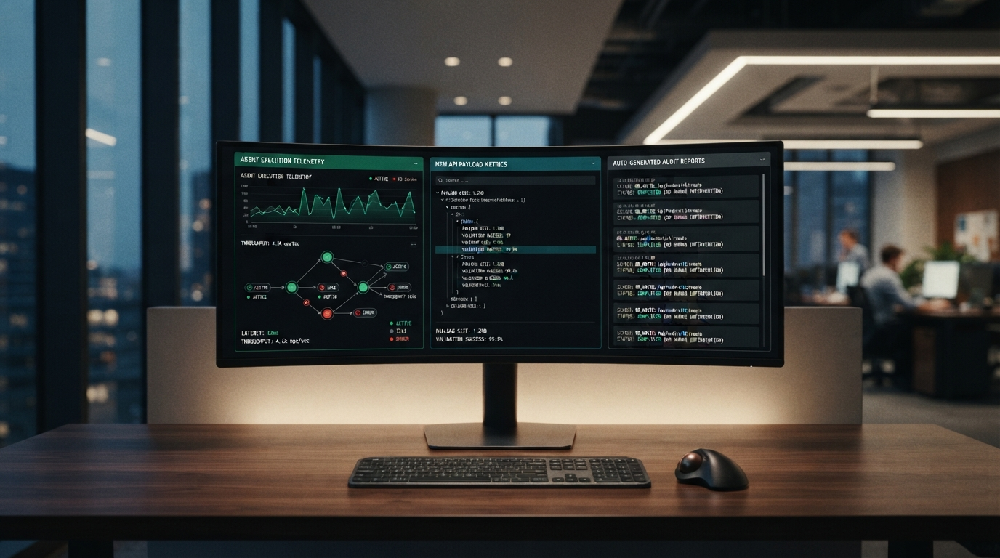

Série: A Evolução Cíclica da TI — Episódio 03 (Conclusão)
Ato III (O Futuro Agora): A Ruptura da IA, o Fim do CRUD Humano e a Web para Agentes

O que a Inteligência Artificial está fazendo no desenvolvimento de software não é o "fim da programação", mas sim o golpe de misericórdia na complexidade intermediária. Por quase quinze anos, o mercado convenceu-se de que o objetivo nobre da engenharia era construir camadas e mais camadas para gerenciar como botões, modais e formulários reagem no navegador do cliente. Esse castelo de cartas finalmente ruiu.
Com a IA generativa integrada ao ambiente de desenvolvimento, a camada visual é gerada, estilizada e conectada em segundos. O desenvolvedor sênior volta a ser o maestro do sistema: ele dita a arquitetura, a persistência e as regras de negócio no backend, e a IA entrega a casca visual integrada. Mas a verdadeira revolução vai muito além da produtividade interna do programador — ela atinge a própria razão de ser do software corporativo.
O novo cliente da sua aplicação: o agente autônomo local
Por décadas, construímos softwares desenhados exclusivamente para os olhos e mãos humanas: menus expansíveis, botões chamativos, máscaras de preenchimento e formulários de cadastro com dezenas de inputs obrigatórios. Todo esse esforço partia de uma limitação: a máquina não entendia a intenção humana, então o ser humano precisava se rebaixar à lógica da máquina, clicando campo a campo.
Esse paradigma está morrendo. Nos próximos anos, o usuário final não vai abrir o navegador para navegar por menus e preencher cadastros manuais. Ele terá o seu próprio agente de IA local (um bot autônomo operando direto na máquina dele). O usuário simplesmente dirá em linguagem natural:
"Emita a nota fiscal do cliente X, aplique a regra tributária de Santa Catarina com desconto de 5% e agende o pagamento para sexta-feira."
O bot traduz essa conversa em um payload JSON estruturado, autentica-se diretamente na API da sua aplicação via credenciais seguras de máquina para máquina (M2M) e executa a transação no banco de dados em milissegundos. A entrada de dados deixou de ser um formulário estático e virou uma conversa.
A morte definitiva do CRUD humano
Se o preenchimento de dados passa a ser operado por agentes autônomos, o que acontece com o tradicional código de CRUD (Criar, Ler, Atualizar e Deletar) feito para humanos?
Ele perde totalmente a razão de existir. Ninguém mais precisará gastar centenas de horas programando telas intermináveis de cadastro com validações de campo a campo na interface, porque o robô consome a rota diretamente. O backend valida a regra de negócio na fonte, persiste o dado com integridade transacional e devolve a confirmação.
O software deixa de ser uma "ferramenta que ajuda o funcionário a digitar" (software de processo) e se transforma no que sempre deveria ter sido: um motor implacável de regras de negócio, dados seguros e entrega de resultados.
Para que serve a tela agora? A tríade da nova interface
Isso significa que o ser humano nunca mais olhará para uma tela? Absolutamente não. Significa apenas que o papel da tela mudou de forma radical. A tela deixa de ser o local onde o trabalho mecânico é realizado e passa a ser o local onde o resultado é auditado. A nova interface divide-se em três pilares:
- Dashboards de Auditoria e Telemetria: Painéis executivos limpos onde o gestor visualiza gráficos consolidados, totais transacionados, indicadores de desempenho e o fluxo de operações realizadas pelos bots em segundo plano.
- Documentos Sintéticos e Relatórios Sob Demanda: Em vez de páginas cheias de botões reativos, o sistema gera relatórios consolidados em HTML leve (Server-Driven) ou PDFs estruturados, prontos para impressão, arquivo contábil e conferência fiscal.
- Painel de Exceções (Human-in-the-loop): O bot executa 99% das operações sozinho. Quando encontra uma inconsistência atípica — por exemplo, uma divergência cadastral de alíquota —, ele pausa o fluxo e apresenta na tela apenas o card da dúvida: "Divergência detectada no cliente Y: aprovar ajuste ou rejeitar?". O humano resolve a exceção em dois segundos e o fluxo segue.
A volta do pêndulo e o triunfo da engenharia raiz
O ciclo histórico se fecha com uma coerência impressionante. Começamos nos anos 80 e 90 com sistemas orientados a texto e integração entre máquinas; passamos trinta anos construindo interfaces gráficas repletas de botões e camadas visuais efêmeras; e agora retornamos à essência da computação: arquitetura headless, APIs de alto desempenho, persistência relacional soberana e contratos de dados limpos — só que agora alimentados pela linguagem natural.
Para quem passou anos estudando fundamentos de engenharia — transações ACID, isolamento de processos, concorrência, redes, performance local e modelagem de domínio —, o futuro não é uma ameaça, mas sim a maior oportunidade em décadas. O valor voltou para quem sabe construir motores sólidos. Quem dominar o núcleo do software e souber orquestrar a inteligência das máquinas comandará com tranquilidade os próximos vinte anos da nossa profissão.
Dicionário de Termos Técnicos e Negócios (para leigos)
Conceitos-chave para entender a revolução dos agentes autônomos e o futuro da engenharia de software:
- CRUD (Create, Read, Update, Delete)
- As quatro operações mecânicas básicas em bancos de dados (cadastrar, consultar, alterar e excluir). O trabalho repetitivo de montar telas manuais para essas ações é o que está sendo automatizado por IA.
- Headless Architecture (Arquitetura sem Cabeça)
- Sistemas desenhados exclusivamente como motores de processamento e dados via APIs, sem depender de uma interface gráfica estática para pessoas clicarem.
- Bot / Agente Local (ex: Croc)
- Assistente de inteligência artificial autônomo que roda direto no computador do usuário, traduzindo pedidos falados ou digitados em execuções técnicas automatizadas.
- M2M (Machine to Machine)
- Protocolos de segurança e autenticação onde máquinas conversam com máquinas diretamente por tokens e certificados criptográficos, sem telas de login para humanos.
- Painel de Exceções (Human-in-the-loop)
- Interface enxuta onde a pessoa só é chamada quando o robô detecta uma dúvida fiscal, financeira ou regulatória que exige validação humana.
- Dashboard de Auditoria
- Painel gerencial consolidado para supervisão executiva, conferência de relatórios e validação dos resultados entregues pelos agentes.
Nota: Terceiro e último ensaio da trilogia A Evolução Cíclica da TI (Fiction-Based Technical Insights & Engineering Realism).